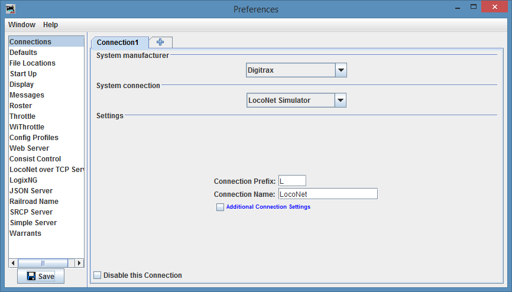

LogixNG Tutorial - Chapter 0
Setting up the profile

- The layout connection will use the Digitrax Simulator.
- The layout components will be without reference to any specific LocoNet hardware.
- The following description is just one of many possible workflows.
- The screenshots are made on Windows 8.1, they will look different depending on the operating system.
|